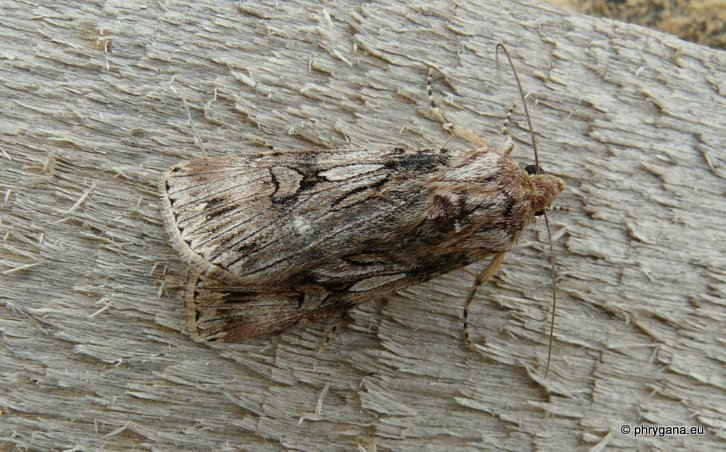

| PHRYGANA | Fauna | Flora | nouveautés | liste des espèces |
contact -
info - commentaires phrygana1 (at) gmail.com |
| Particularités crétoises | Galles et mines | ressources naturelles |
| Agrotis herzogi Rebel 1911 |
| 311 | Fauna | LEPIDOPTERA | NOCTUIDAE | Noctuinae | Noctuini | Agrotis Ochsenheimer 1816 |
|
 Agrotis herzogi Melambes (Agios Giorgos) 28 novembre 2010 |
| en: Spalding's Dart fr: l'Agrotis libanaise |
| Envergure: 36 - 46 mm. Couleur de fond brun beige, veines noires; réniforme bien marquée; pattes annelées; ligne de triangles noirs à la frange |
| Chenille: nourriture inconnue (Chenopodiaceae?) |
| Espèce univoltine |
| Période de vol: novembre décembre |
| Statut en Crète: peut-être indigène |
| Biotopes en Crète: phrygana, garrigue, collines sèches et chaudes |
| Distribution: îles Canaries, Afrique du Nord, Turquie, Moyen-Orient, Iran, Inde, Extrême-Orient |
| Espèce xérophile |
| Note: vient à la lumière; migrateur vers l'Europe méditerranéenne par les vents chauds en provenance du Sahara |
|
Agrotis herzogi Melambes (Agios Giorgos) 28 novembre 2010 |
|
Agrotis herzogi Melambes (Agios Giorgos) 28 novembre 2010 |
| 31 janvier 2012 |
| © paul fontaine -- © Phrygana.eu 2007 -- 2013 |